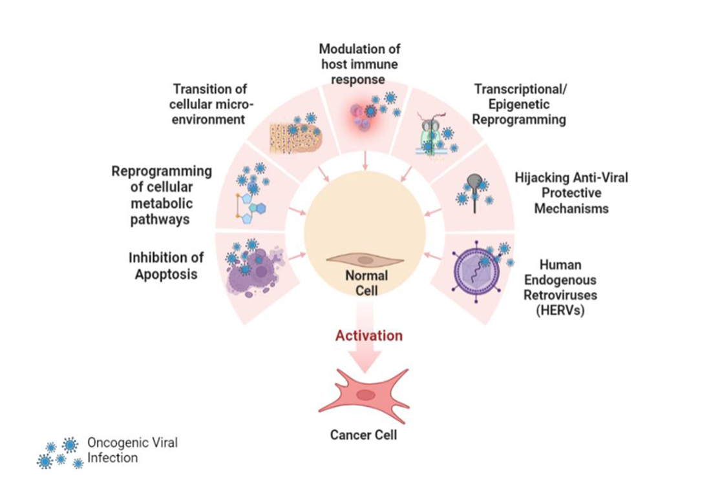

Causes of Oncogenic Viruses
Oncogenic viruses cause cancer by introducing genetic changes in host cells that disrupt normal cell regulation. The main causes and risk factors associated with oncogenic virus-induced cancers include:
- Viral Infection: Infection with specific viruses such as Human Papillomavirus (HPV), Hepatitis B Virus (HBV), Hepatitis C Virus (HCV), Epstein-Barr Virus (EBV), Human T-cell Leukemia Virus type 1 (HTLV-1), and Kaposi's Sarcoma-associated Herpesvirus (KSHV) can lead to cancer development.
- Integration of Viral DNA: Some viruses integrate their DNA into the host genome, disrupting genes that control cell growth and division.
- Production of Oncoproteins: Viral proteins can inactivate tumor suppressor genes (like p53 and Rb) or activate oncogenes, promoting uncontrolled cell proliferation.
- Chronic Inflammation: Persistent viral infections can cause chronic inflammation, increasing the risk of DNA damage and mutations.
- Immune Suppression: Conditions that weaken the immune system (such as HIV infection or immunosuppressive therapy) increase susceptibility to oncogenic viruses and related cancers.
- Environmental and Behavioral Factors: Factors such as unprotected sex, sharing needles, blood transfusions, and poor hygiene can increase the risk of acquiring oncogenic viruses.
